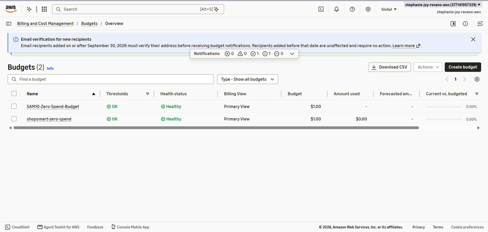

Results: before and after
Method: the same 30 questions, the same model (gemini-3.5-flash-lite), the same script, run on 2026-11-26 (Leona run finished
02:30 UTC; generic-baseline run finished 03:02 UTC). "Before" is the model with no resort knowledge (what the unmodified application can offer); "after" is Leona.
| Measure | Before | After | Period / how measured |
|---|---|---|---|
| Answer quality (30 labelled questions) | 9/30 (30%) | 30/30 (100%) | eval script, 2026-11-26 |
| Average answer time | 2.5 s (median 2.3 s) | 4.5 s (median 3.5 s) | same script and questions; Leona sends six documents with every question, so it is slower, and its run included Gemini retries |
| Alarms that e-mail me | 0 | 8 | 2026-11-26 |
| Time to detect a full disk | not detected (no monitoring) | 3 min 34 s | incident, 2026-11-26 |
| Time to fix | n/a | 7 min 11 s from the alarm | incident, 2026-11-26 |
| Backups / tested restore | none | hourly; restore in 25 s | 2026-11-26 |
| Secret values in the repository or its history | keys in a local file | 0 | scanned before the first push |
| Cost (E-16) | USD 117.40 free-plan credits remaining (2026-11-26, console home, before deployment) | [PENDING] | AWS console, credits are used first |

| Category | Generic | Leona |
|---|---|---|
| fact | 3/18 | 18/18 |
| policy | 0/3 | 3/3 |
| rule | 2/3 | 3/3 |
| unknown | 2/3 | 3/3 |
| out of scope | 0/1 | 1/1 |
| safety | 2/2 | 2/2 |
Caveats. The questions are mine; a keyword matcher cannot see subtle errors (see test T3); the latency numbers are small samples and depend on the external
model's load that day. The hourly scheduled test on AWS (5 questions) is the live health measure of the deployed system.
Cost
All spending is covered by the account's free-plan credits. Controls: a zero-spend AWS Budgets alert created first, tags on every resource, the smallest viable instance, 14-day log retention, and a shut-down plan on the last page. Idle cost of this design is mostly the instance, the public IPv4 address and CloudFront requests.
